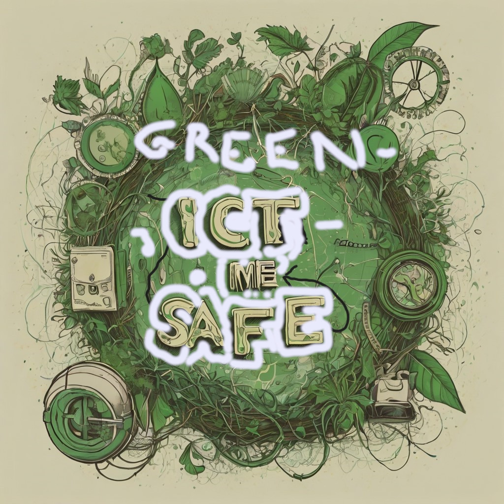

-- Convidi la tua esperienza con Noi --
Main
Le persone
Dove siamo?
Seguici sui Social
-->
-->
Survey bar:
10%

-- PUBLISHED by --
Tollerance: 1. The human knowledge means be tolerant .
C. Bini Handwritten by a prisoner : XXII
Greetings from greenictsafe